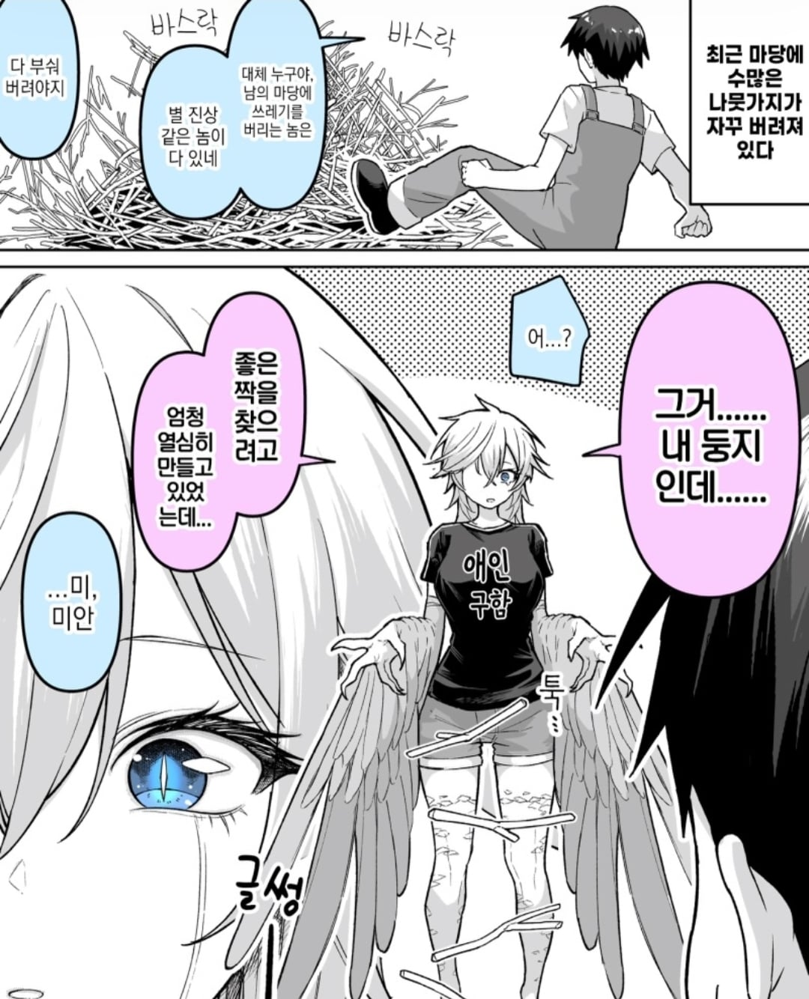
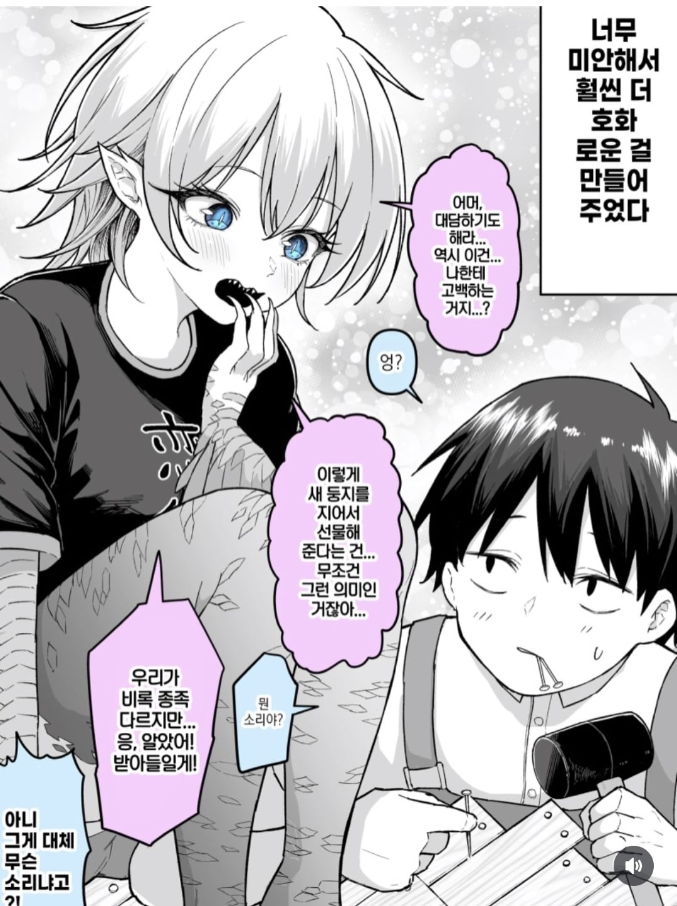

31 · 16 · 2 시간 전 · 원문


수집 당시 댓글 16개
사랑해요5 · 4 시간 전
피카츄라이츄아구몬꼬부기 · 4 시간 전
총배설강이라는 댓글 금지!
↳ 답글 · 유아학교 · 4 시간 전
↳ 답글 · 미카모ᅟᅠ네루 · 3 시간 전
↳ 답글 · 핑크타릭 · 2 시간 전
오케이 뷰지
↳ 답글 · 인간실격짐승합격 · 2 시간 전
사람이랑 하피랑 하면 죽을거 같음
↳ 답글 · 전산실김씨 · 1 시간 전
똘추 · 4 시간 전
총배설강이겠지?
댕멍꿀꿀 · 4 시간 전
딜바다 · 3 시간 전
보통 숫놈이 둥지 크는거 아님?
↳ 답글 · 구굴 · 3 시간 전
[🍆]
↳ 답글 · Ainsof · 3 시간 전
짝을 찾기전 짓는 것은 대부분 수컷의 유인책암컷이 짓는 경우도 있긴 한데 이건 짝을 찾은후 이야기수컷이 먼저 짓는 경우: 교미 전부터 둥지를 만들고 장식해 암컷을 유인한다. 바우어새와 위버새가 대표적이야.암수가 함께 짓는 경우: 대체로 짝을 형성한 다음 산란과 육추를 위해 둥지를 만든다.암컷이 주도하는 경우: 짝을 형성하고 교미한 이후 산란 준비를 위해 둥지를 만드는 경우가 많아.
메카다나카 · 3 시간 전
미녀와야스 · 3 시간 전
야율아보기 · 3 시간 전
대충 총배설강에 어쩌구저쩌구
보듬어주는사회 · 2 시간 전
Cex
댓글
수집 당시 댓글 16개
사랑해요5 · 4 시간 전
피카츄라이츄아구몬꼬부기 · 4 시간 전
총배설강이라는 댓글 금지!
· 유아학교 · 4 시간 전
· 미카모ᅟᅠ네루 · 3 시간 전
· 핑크타릭 · 2 시간 전
오케이 뷰지
· 인간실격짐승합격 · 2 시간 전
사람이랑 하피랑 하면 죽을거 같음
· 전산실김씨 · 1 시간 전
똘추 · 4 시간 전
총배설강이겠지?
댕멍꿀꿀 · 4 시간 전
딜바다 · 3 시간 전
보통 숫놈이 둥지 크는거 아님?
· 구굴 · 3 시간 전
[🍆]
· Ainsof · 3 시간 전
짝을 찾기전 짓는 것은 대부분 수컷의 유인책
암컷이 짓는 경우도 있긴 한데 이건 짝을 찾은후 이야기
수컷이 먼저 짓는 경우: 교미 전부터 둥지를 만들고 장식해 암컷을 유인한다. 바우어새와 위버새가 대표적이야.
암수가 함께 짓는 경우: 대체로 짝을 형성한 다음 산란과 육추를 위해 둥지를 만든다.
암컷이 주도하는 경우: 짝을 형성하고 교미한 이후 산란 준비를 위해 둥지를 만드는 경우가 많아.
메카다나카 · 3 시간 전
미녀와야스 · 3 시간 전
야율아보기 · 3 시간 전
대충 총배설강에 어쩌구저쩌구
보듬어주는사회 · 2 시간 전
Cex